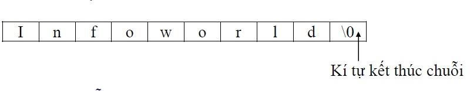

Trong ngôn ngữ lập trình C, chuỗi là một tập hợp các ký tự (char) được lưu trữ trên các ô nhớ liên tiếp và luôn luôn có 1 ký tự null là \0 báo hiệu kết thúc chuỗi.
Ví dụ: chuỗi "Infoworld" được lưu trữ như sau:
Như vậy, nếu bạn muốn khai báo chuỗi để lưu n ký tự, bạn cần mảng ký tự có kích thước tối đa ít nhất là n+1.
Bạn có thể khai báo và khởi tạo biến chuỗi theo 1 trong các cách dưới đây:
char c[] = "abcd";
char c[50] = "abcd";
char c[] = {'a', 'b', 'c', 'd', '\0'};
char c[5] = {'a', 'b', 'c', 'd', '\0'};
Nhưng không được làm như sau:
char c[5] = "abcde";
Bởi vì chuỗi của bạn có 5 ký tự cộng thêm 1 ký tự \0 là 6, sẽ bị vượt quá kích thước tối đa.
Bạn có thể sử dụng hàm scanf() để nhập chuỗi không có chứa dấu trắng (dấu cách, dấu tab, dấu \n) và hàm printf() để xuất chuỗi.
Ví dụ chương trình nhập xuất chuỗi dùng scanf() và printf().
Nhập một chuỗi bất kỳ không có khoảng trắng (ví dụ Minh) và một chuỗi có khoảng trắng (Ngoc Minh) vào ô Stdin Inputs. Nhấn nút Execute màu xanh để xem kết quả.
Nếu bạn để ý thì hàm scanf() dùng dấu trắng để nhập nhiều input đồng thời. Ví dụ nhập Minh sẽ hiển thị Minh nhưng nếu nhập Ngoc Minh chỉ hiển thị Ngoc. Do đó bạn chỉ nên dùng hàm scanf() khi nhập chuỗi viết liền. Chúng ta sẽ cùng tìm hiểu cách nhập chuỗi có khoảng trắng ngay sau đây.
Để nhập chuỗi bao gồm cả dấu trắng, bạn nên sử dụng hàm fgets() để nhập. Tương ứng, bạn cũng có thể in ra chuỗi bằng hàm puts().
Nhập một chuỗi bất kỳ có khoảng trắng (Ngoc Minh) vào ô Stdin Inputs. Nhấn nút Execute màu xanh để xem kết quả.
Lưu ý:
C hỗ trợ rất nhiều hàm về chuỗi. Các hàm này có thể tìm thấy trong tập tin string.h. Một số thao tác mà các hàm này thực hiện là:
Hàm strcat()
Hàm strcat() được sử dụng để nối hai chuỗi vào nhau. Cú pháp hàm là:
strcat(str1, str2);
trong đó str1 và str2 là hai chuỗi đã được khai báo và khởi tạo. Hàm này sẽ thực hiện nối chuỗi str2 vào sau chuỗi str1.
Nhập chuỗi str1 (không chứa khoảng trắng, ví dụ Ngoc) và chuỗi str2 (không chứa khoảng trắng, ví dụ Minh) vào ô Stdin Inputs. Lưu ý str1 và str2 cách nhau bởi khoảng trắng. Nhấn nút Execute màu xanh để xem kết quả.
Giả sử chúng ta nhập Ngoc Minh vào ô Stdin Inputs, kết quả sẽ là NgocMinh.
Hàm strcmp()
Việc so sánh hai số (bằng nhau hay không bằng nhau) có thể thực hiện bằng cách sử dụng các toán tử quan hệ. Tuy nhiên, để so sánh hai chuỗi kí tự, phải dùng một hàm. Hàm strcmp() so sánh hai chuỗi với nhau và trả về một số nguyên phụ thuộc vào kết quả so sánh. Cú pháp của hàm strcmp() như sau:
strcmp(str1, str2);
trong đó str1 và str2 là hai chuỗi đã được khai báo và khởi tạo. Hàm trả về giá trị:
Chương trình sau đây so sánh biến name1 với các biến name2, name3, name4 và hiển thị kết quả của phép so sánh:
Nhấn nút Execute màu xanh để xem kết quả.
Lưu ý giá trị trả về trong mỗi phép so sánh ở ví dụ trên. Đó là sự khác nhau về mã ASCII của hai kí tự khác nhau đầu tiên tìm thấy trong hai chuỗi.
Hàm strchr()
Hàm strchr() xác định vị trí xuất hiện của một ký tự trong một chuỗi. Cú pháp hàm là:
strchr(str, chr);
trong đó str là một mảng ký tự hay chuỗi. chr là một biến ký tự chứa giá trị cần tìm. Hàm trả về con trỏ trỏ đến giá trị tìm được đầu tiên trong chuỗi, hoặc NULL nếu không tìm thấy.
Chương trình sau đây xác định liệu ký tự 'a' có xuất hiện trong tên hai thành phố hay không.
Nhấn nút Execute màu xanh để xem kết quả.
Hàm strcpy()
Trong C không có toán tử nào xử lý một chuỗi như là một đơn vị duy nhất. Vì vậy, phép gán một giá trị chuỗi này cho một chuỗi khác đòi hỏi phải sử dụng hàm strcpy(). Cú pháp hàm là:
strcpy(str1, str2);
trong đó str1 và str2 là hai mảng ký tự đã được khai báo và khởi tạo. Hàm sao chép giá trị str2 vào str1 và trả về chuỗi str1.
Chương trình sau đây minh họa việc sử dụng hàm strcpy(). Nó thay đổi tên của một khách sạn và hiển thị tên mới.
Nhấn nút Execute màu xanh để xem kết quả.
Hàm strlen()
Hàm strlen() trả về chiều dài của chuỗi. Chiều dài của chuỗi rất hay được sử dụng trong các vòng lặp truy câp từng kí tự của chuỗi. Cú pháp của hàm là:
strlen(str);
trong đó str là mảng ký tự đã được khai báo và khởi tạo. Hàm trả về chiều dài của chuỗi str.
Chương trình sau đây đưa ra ví dụ đơn giản sử dụng hàm strlen(). Nó tìm chiều dài của tên một công ty và hiển thị tên công ty đó với các ký tự được phân cách nhau bởi ký tự '*'.
Nhấn nút Execute màu xanh để xem kết quả.
Chuỗi, hay mảng ký tự, có thể được truyền vào hàm. Ví dụ, chương trình sau đây sẽ nhận vào các chuỗi và lưu trong một mảng ký tự hai chiều. Sau đó, mảng này sẽ được truyền vào trong một hàm dùng để tìm chuỗi dài nhất trong mảng đó.
Nhập 3 chuỗi cách nhau bởi khoảng trắng vào ô Stdin Inputs. Nhấn nút Execute màu xanh để xem kết quả.
Ví dụ nhập aa bbb cccc, kết quả hiển thị: Chuoi dai nhat la: cccc